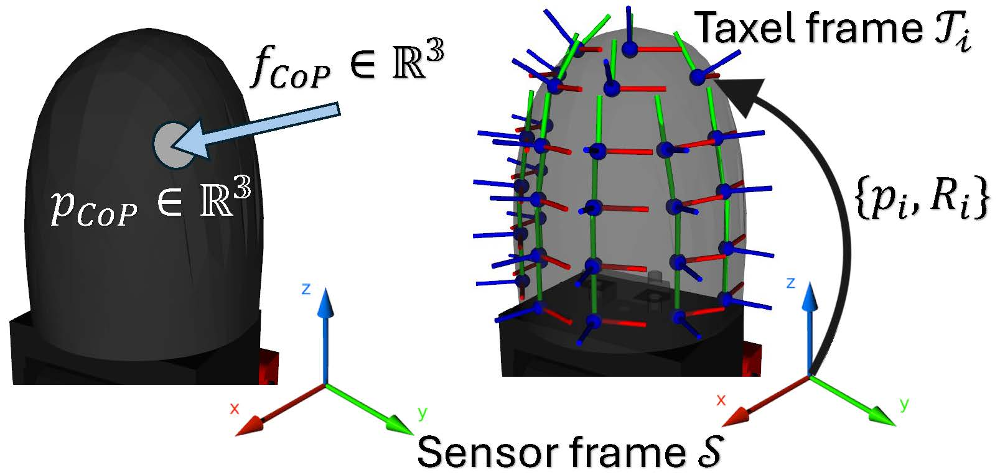
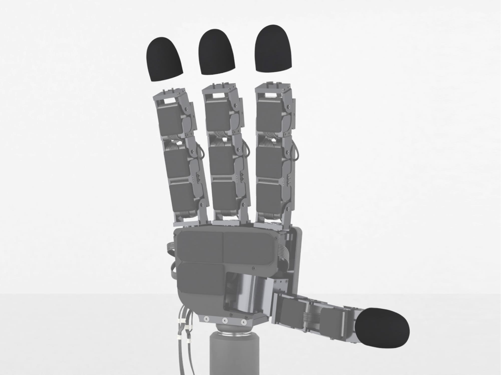

A primary bottleneck in contact-rich manipulation is the difficulty of collecting real-world data. Sim-to-real reinforcement learning offers a scalable alternative, but the simulation-reality gap prevents information-dense modalities like touch from being effectively used. Existing sim-to-real methods often mitigate this gap by simplifying tactile data into low-dimensional features – sacrificing the richness required for complex manipulation.
In this work, we introduce Center-of-Pressure (CoP), an effective tactile representation grounded in physical principles that preserves dense contact information while maintaining robustness for sim-to-real transfer. To support this representation, we propose a sensor calibration scheme based on differentiable dynamics, enabling the estimation of taxel orientations without requiring ground-truth force measurements.
We evaluate CoP on two blind, challenging contact-rich manipulation tasks: peg-in-hole insertion and ball balancing. Across both tasks, policies conditioned on CoP achieve zero-shot sim-to-real transfer on a multi-fingered hand and outperform both coarse binary-contact and raw-taxel baselines. Anaysis of the learned policy state further suggests that CoP-conditioned policies encode task-relevant physical properties, such as object mass, as an emergent byproduct of control.
CoP consists of a single 3-dimensional force vector \({}^\mathcal{S}f_{\mathrm{cop}}\in\mathbb{R}^3\) representing the total force acting on the robot link by the object, and the 3-dimensional Cartesian coordinates of a single centroidal contact point \({}^\mathcal{S}p_{\mathrm{cop}}\in\mathbb{R}^3\), both expressed in the sensor frame \(\mathcal{S}\).

Left: CoP quantities expressed in sensor frame \(\mathcal{S}\). Right: Transformation between each taxel frame \(\mathcal{T}_i\) and sensor frame \(\mathcal{S}\) for the XELA uSkin sensor arrays used in this work.

The hardware used in this work is the Allegro hand (16 DOFs) equipped with XELA uSkin tactile sensors.
Sensor surface deformation model: A contact force $f_{\rm{cop}}$ is decomposed into normal $f_n$ and shear $f_s$ components. We then model the normal $f_{i,n}$ and shear $f_{i,s}$ effective forces on each taxel $i$ under surface deformation, accounting for changed force direction and decayed magnitude due to internal force distribution. The effective normal and shear components are combined to obtain the resulting taxel force $f_i$.
Based on the deformation model, the raw taxel forces $f_i$ and the CoP force $f_{\rm_{cop}}$ can be related via a simple linear mapping, \(f_i = M_i f_{\rm{cop}}\) , where \(M_i \in\mathbb{R}^{3\times3}\) is the taxel-specific mapping matrix.
We present a novel method to learn the taxel orientations via differentiable dynamics, without requiring any ground-truth force measurements.
Slide to see intermediate stages of learning (from randomly initialized taxel rotations)
The columns are consistent across all baseline comparisons below.
@article{pan2026cop,
author = {Pan, Jiahe and Coros, Stelian and Malik, Jitendra and Lin, Toru},
title = {Beyond Binary: Sim-to-Real Dexterous Manipulation with Physics-Grounded Contact Representation},
journal = {arXiv},
year = {2026},
}